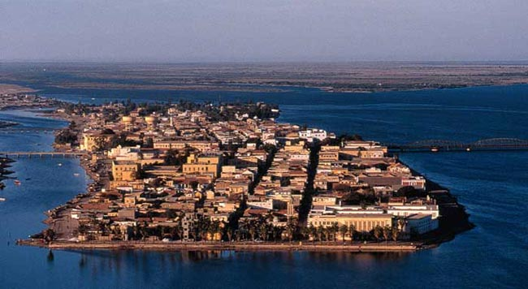
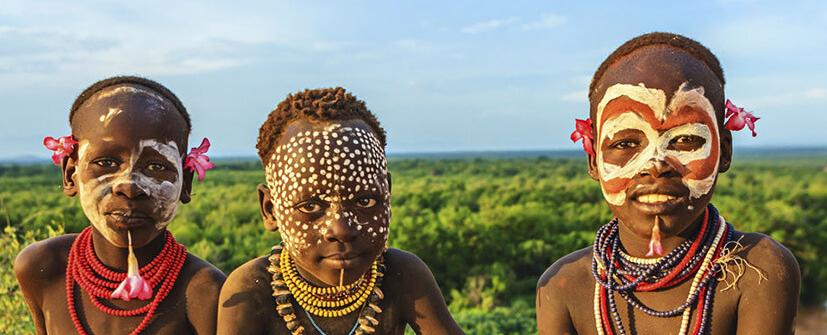
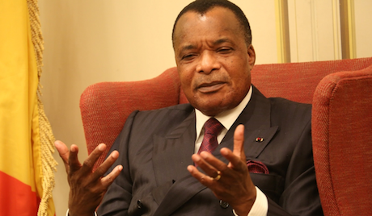
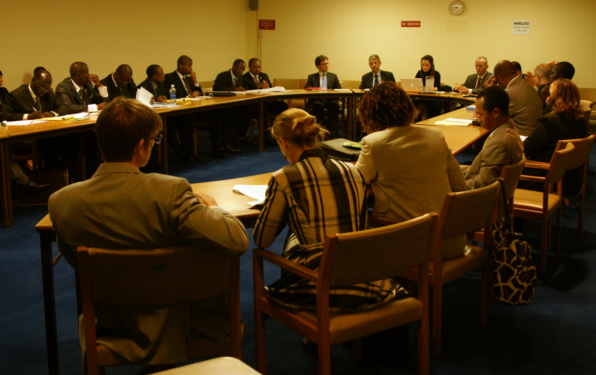

ANNONCE - Exposition sur Saint-Louis du Sénégal.

Notre agence prépare actuellement une exposition sur la ville de Saint-Louis, au Sénégal. Cette exposition permettra de découvrir cette cité magique à travers son tourisme mais aussi à travers sa culture et son patrimoine culturel.
Des intervenants seront également présents pour une présentation générale de la ville. Cette exposition est prévue pour le mois de mars 2016 et aura lieu près de notre agence. Plus d'informations bientôt !
Publié le 31/12/15
VOYAGE - Une nouvelle destination: Kangaré.

Notre tout nouveau voyage est un franc succès ! Les premiers touristes, partis avec notre agence, sont déjà revenus de leur voyage. Ils ont hâte de repartir à l'aventure sur l'une de nos autres destinations.
Découvrez leurs expériences sur notre forum dédié. Réservez sans plus attendre, et rendez-vous dans ce magnifique pays authentique.
Publié le 18/12/15
AFRIQUE - Le Congo et la COP21.

La COP21 s’est ouverte le lundi 30 novembre, à Paris. De nombreux chefs d'Etat comme Barack Obama ou Xi Jinping étaient présents ainsi que de nombreux dirigeants africains.
Denis Sassou N’Guesso, le Président du Congo Brazzaville figure parmi les principaux chefs de file des pays du continent. Ce dernier entend mettre à profit cette tribune internationale pour rappeler le combat engagé de longue date par son pays en faveur de la préservation de son vaste patrimoine naturel et de ses fragiles écosystèmes.
suite ...
Publié le 01/12/15
CULTURE - Rencontre entre voyageurs et spécialistes de l'Afrique.
 Dans le but de promouvoir la culture africaine, notre agence propose une rencontre entre d'anciens voyageurs et des spécialistes de l'Afrique. Nous nous associons ainsi à des auteurs ainsi qu'à certains bénévoles africain afin de vous faire découvrir plus en détail les condtions de vies, l'histoire et la cultuire africaine.
2 conférences sont prévues pour l'année 2016: une première au mois de février et une seconde au mois d'avril. Pour plus d'informations sur la prochaine conférence, nous vous invitons à consulter cette page.
Publié le 26/11/15